Submitting the correct photo is an essential part of applying for a Schengen visa, US visa, or the Diversity Visa (DV) Green Card Lottery. The photo you submit must adhere to specific guidelines, and any mistake can lead to delays, rejections, or even the denial of your application. To help you navigate this process smoothly, we've outlined the 10 most common mistakes people make with their visa photos—and how to avoid them.
1. Incorrect Photo Size
One of the most frequent mistakes is submitting a photo that does not meet the required dimensions.
- Schengen Visa: Photos must be 35mm wide by 45mm high.
- US Visa and Diversity Visa (DV) Green Card Lottery: The photo must be 2 inches by 2 inches (51mm x 51mm).
Submitting a photo of the wrong size can lead to automatic rejection. Always verify the exact size requirements for your specific visa type.
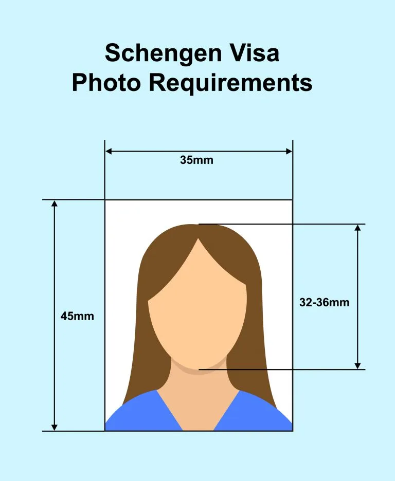
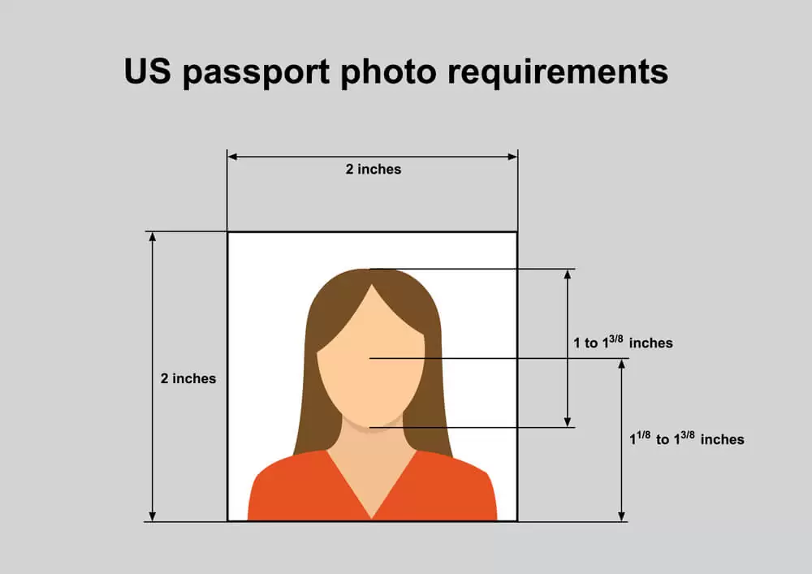
2. Poor Lighting and Shadows
Proper lighting is critical for all visa photos. Uneven lighting or shadows can make your photo unacceptable.
- Schengen Visa: Ensure your face is evenly lit without shadows. Avoid both overly bright and dim lighting.
- US Visa and DV Green Card Lottery: Photos must have no shadows on the face or background. Natural lighting is often the best choice for a clear, professional image.
Make sure your face is fully illuminated and the background is evenly lit.
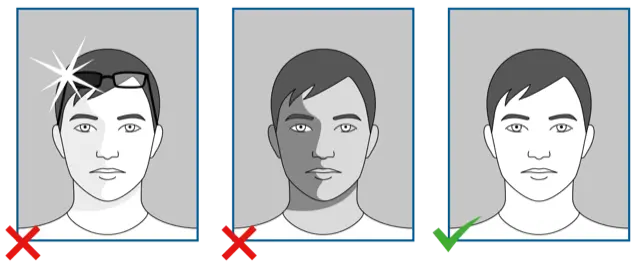
3. Incorrect Background Color
An incorrect background color is a common reason for photo rejection.
- Schengen Visa: The background must be a light color—typically white or light gray.
- US Visa and DV Green Card Lottery: The background must be plain white. Even a slightly off-white background may lead to rejection.
Ensure that the background is completely plain and free of patterns or textures.
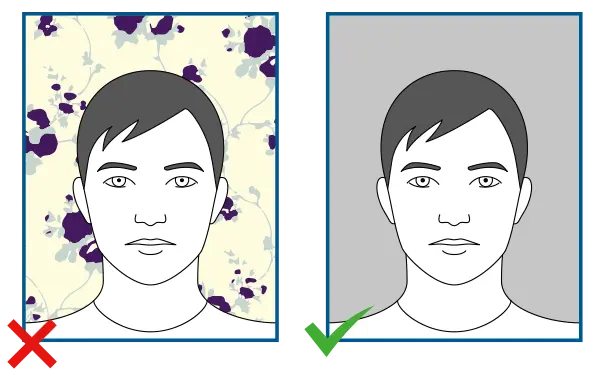
4. Wearing Glasses with Glare or Reflection
Glasses can pose a challenge in visa photos.
- Schengen Visa: Glasses are allowed, but there must be no reflections, and your eyes must be fully visible.
- US Visa and DV Green Card Lottery: Glasses are not allowed unless medically necessary, and any glare or reflection will result in rejection.
To avoid issues, it's often safer to take your photo without glasses.
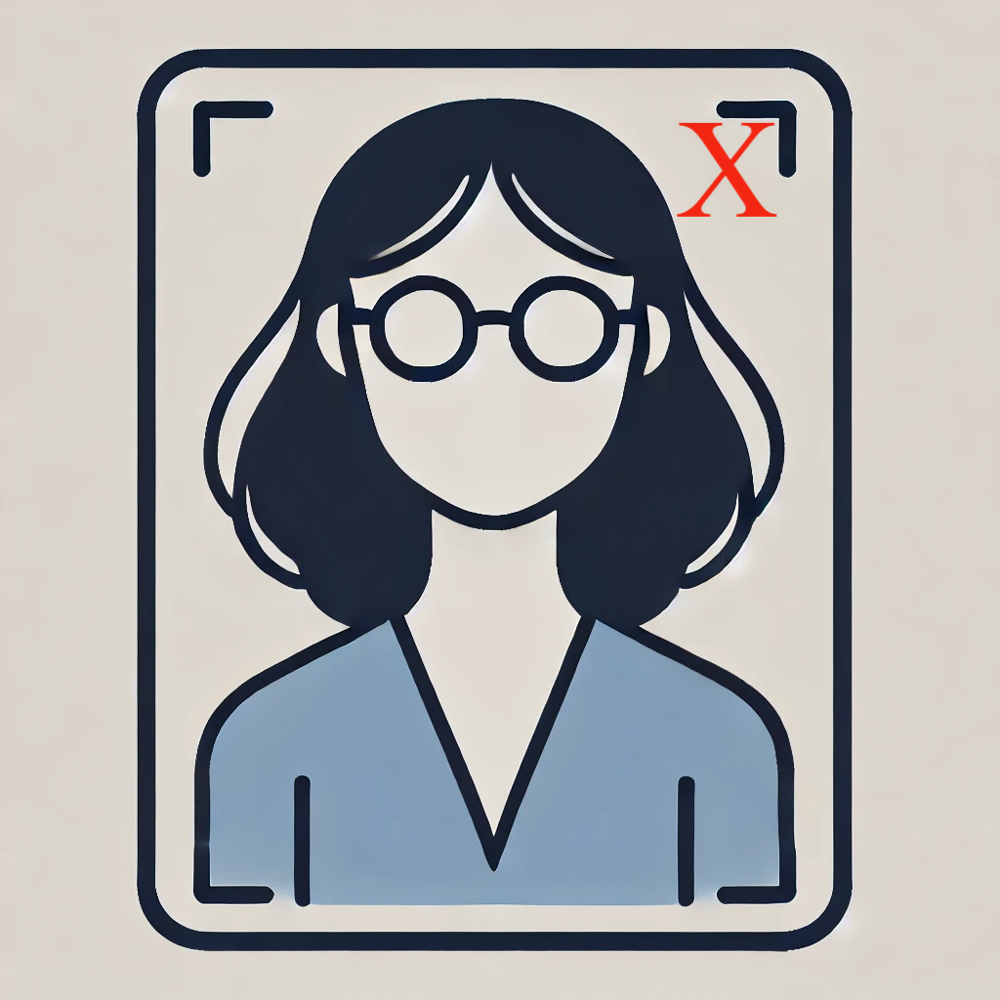
5. Incorrect Head Position
Your head position is key to ensuring your visa photo meets the required standards.
- Schengen Visa: Your face must be centered and facing directly forward.
- US Visa and DV Green Card Lottery: The head must be squarely centered in the frame, facing directly toward the camera.
Your entire face should be clearly visible, with no tilting or turning to the side.
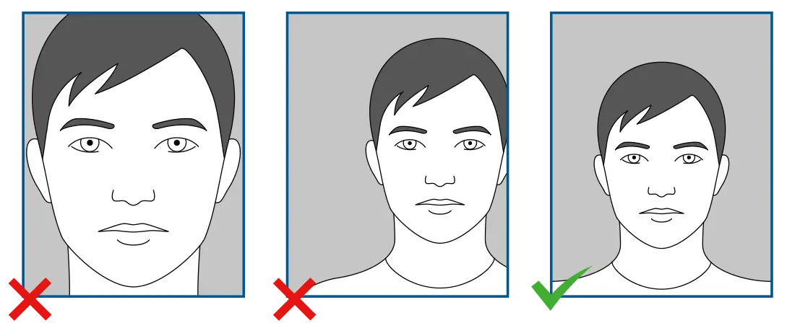
6. Smiling or Making Facial Expressions
Visa photos require a neutral expression.
- Schengen Visa: No smiling or exaggerated facial expressions. Keep a neutral expression with your mouth closed.
- US Visa and DV Green Card Lottery: The rules are the same—no smiles or raised eyebrows. Your expression should be relaxed and neutral.
This ensures that your face can be easily recognized by the authorities.
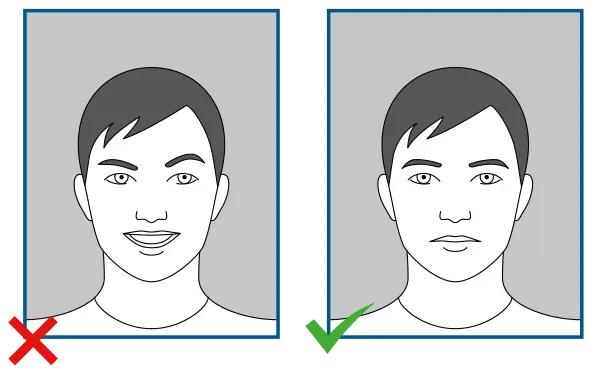
7. Wearing Headgear
Headgear is only permitted in certain cases.
- Schengen Visa: Headgear is only allowed for religious reasons, and even then, it must not cover any part of your face.
- US Visa and DV Green Card Lottery: Head coverings are also only permitted for religious or medical reasons and cannot obscure any facial features.
Ensure that your entire face is visible if you must wear a head covering.
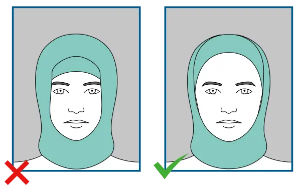
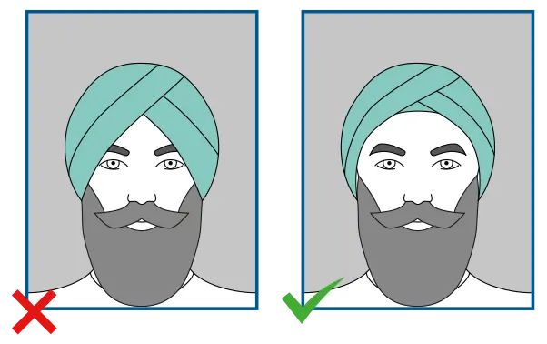
8. Obstructed Face
Your entire face, from the bottom of your chin to the top of your forehead, must be visible.
- Schengen Visa: Hair or accessories that cover any part of your face will result in rejection.
- US Visa and DV Green Card Lottery: The same strict rules apply—your face must be completely unobstructed.
Avoid wearing large accessories like earrings, and keep your hair away from your face.
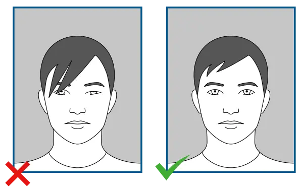
9. Blurry or Low-Quality Photos
Submitting a blurry or pixelated photo is a sure way to get rejected.
- Schengen Visa: The photo must be sharp and clear.
- US Visa and DV Green Card Lottery: The photo must also be high resolution, with no blurriness or pixelation.
Always use a high-quality camera or visit a professional photo service to ensure clarity.
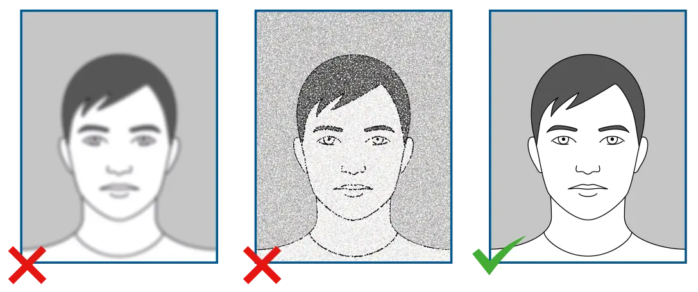
10. Outdated Photos
Using an old photo is another frequent error.
- Schengen Visa: The photo must have been taken within the last six months and reflect your current appearance.
- US Visa and DV Green Card Lottery: The photo must be no older than six months, and any significant change in your appearance requires a new photo.
Conclusion
Ensuring that your Schengen visa, US visa, or Diversity Visa (DV) Green Card Lottery photo meets all the necessary requirements is crucial for a successful application. Avoid these common mistakes, and you'll increase your chances of approval while reducing delays. Our Visa Photo Editor ensures your photo is perfectly formatted for Schengen, US visa, and DV Green Card Lottery requirements.
By following these guidelines and utilizing our tools, you can easily submit a compliant photo, helping you take the first step toward your next travel or immigration adventure.
Need help with your visa photo?
Try our free Visa Photo Editor to ensure your photo meets all requirements.
Use Our Photo Tool